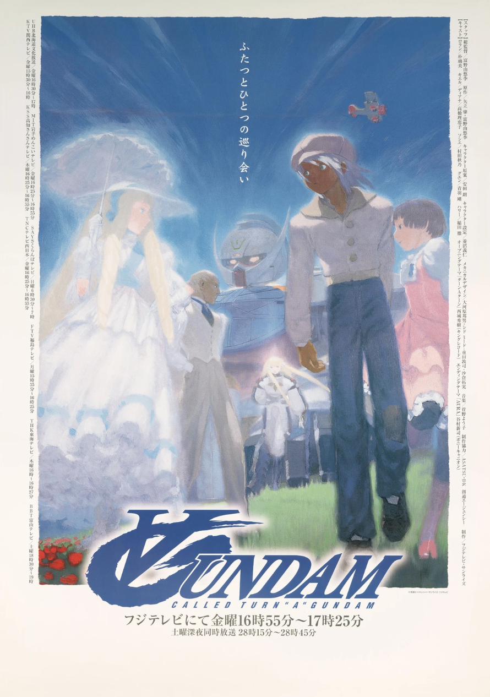

Turn A Gundam (∀ Gundam)
Introduction
Turn A Gundam (often stylized as ∀ Gundam) is a mecha anime series created by Sunrise and directed by Yoshiyuki Tomino. It first aired in 1999–2000 and is known for its distinct design and its role as a unifying series in the Gundam multiverse.
Universe & Timeline
The story is set in a far-future world where several Gundam universes converge, introducing the “Correct Century” timeline intended to bridge multiple Gundam eras.
Series Information
| Title | Turn A Gundam (∀ Gundam) |
|---|---|
| Director | Yoshiyuki Tomino |
| Studio | Sunrise |
| Original Run | 1999 – 2000 |
| Genre | Mecha / Sci-Fi / Drama |
Opening Theme
Fun Facts and Trivia
- The ∀ symbol means “for all.”
- The Moonlight Butterfly weapon can revert global technology to dust.
- It was designed as a bridge across all Gundam universes.
Learn more on Wikipedia or Gundam Fandom.